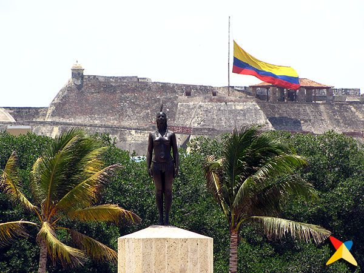
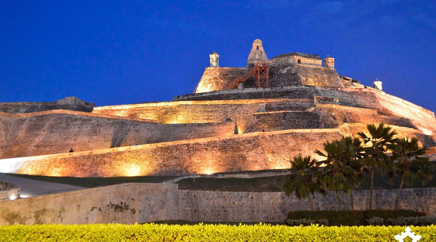
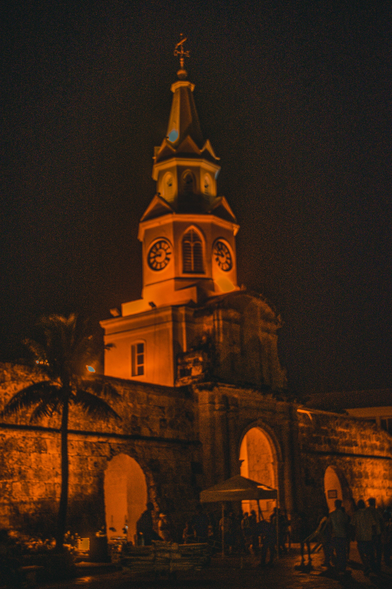
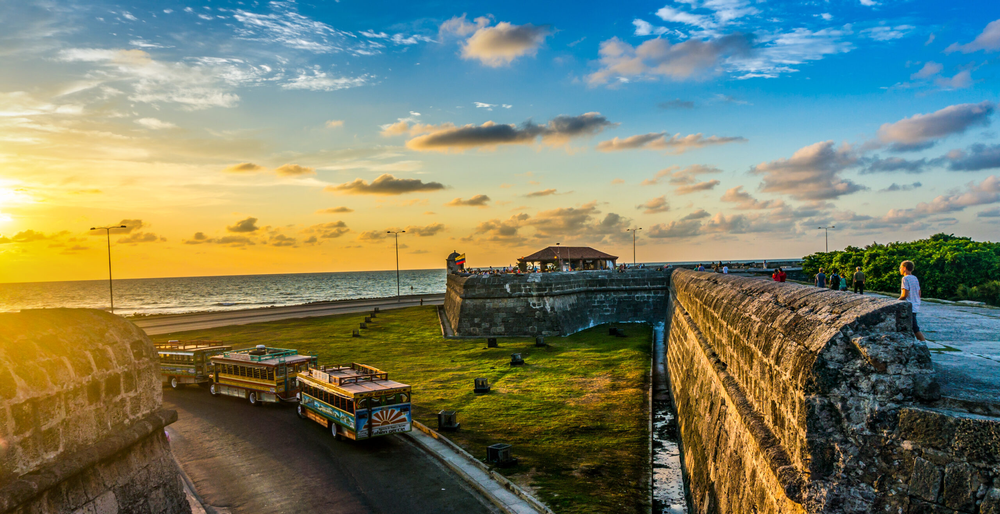
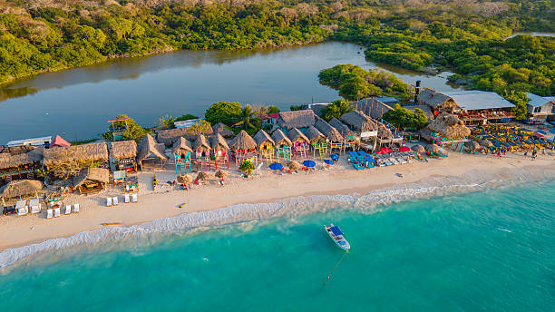
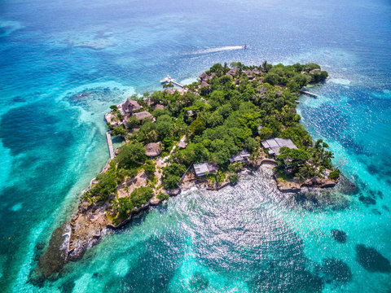
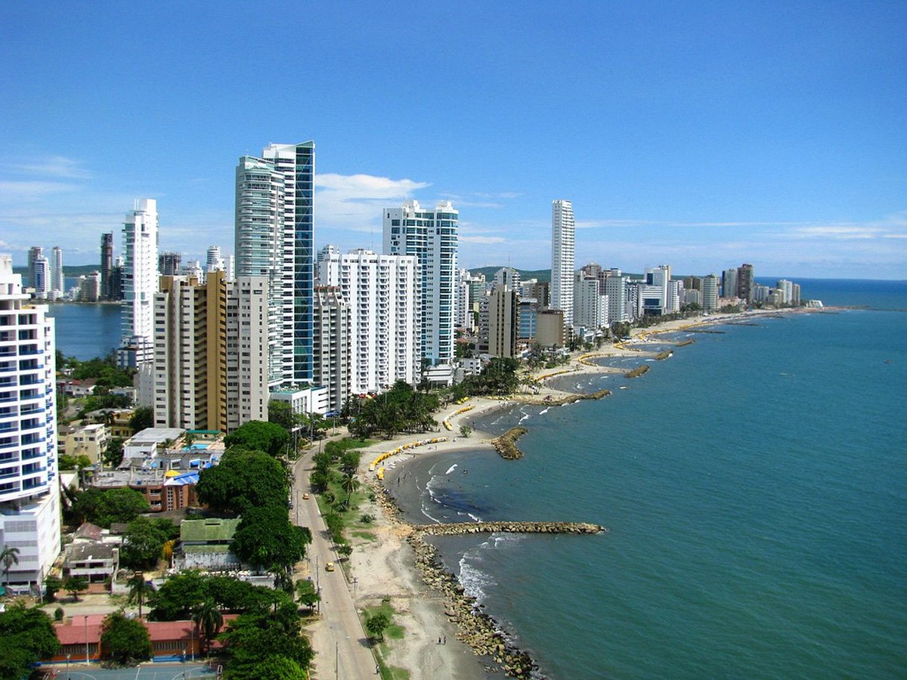

Cartagena concentra en pocos kilómetros algunos de los lugares más fascinantes de América: fortalezas coloniales, plazas históricas llenas de vida, monumentos emblemáticos, playas paradisíacas e islas de ensueño en el Caribe.
La India Catalina: Símbolo de Cartagena

La India Catalina
La India Catalina es el monumento más representativo e identitario de Cartagena de Indias. Se encuentra en la entrada del Centro Histórico, en la glorieta frente a la Torre del Reloj, y da la bienvenida a todos quienes llegan a la Ciudad Heroica.
La escultura representa a Catalina de Indias, una mujer indígena del pueblo Calamari que fue capturada por los españoles siendo niña, llevada a Santo Domingo donde aprendió español, y regresó a Cartagena como intérprete y traductora durante la conquista. Su figura encarna la historia de resistencia y encuentro de culturas en Cartagena.
La estatua fue diseñada por el escultor cartagenero Eladio Gil en 1974. Además, la India Catalina da nombre al Premio India Catalina, el galardón más importante del Festival Internacional de Cine de Cartagena (FICCI), equivalente al Óscar colombiano.
Monumentos y Sitios Históricos de Cartagena

Castillo San Felipe de Barajas
La fortaleza militar más grande construida por los españoles en toda América. Símbolo de la resistencia cartagenera, fue construida sobre el cerro San Lázaro entre 1536 y 1657. Sus túneles internos son una maravilla de ingeniería militar.

Torre del Reloj (Boca del Puente)
Puerta principal de acceso al Centro Histórico Amurallado. Su icónica torre con reloj, construida en el siglo XVII, es el símbolo más reconocido de Cartagena y el punto de encuentro obligado de la ciudad.

Las Murallas de Cartagena
Once kilómetros de murallas coloniales construidas entre los siglos XVI y XVIII para proteger la ciudad de ataques piratas. Hoy son el paseo preferido de cartageneros y turistas al atardecer, con vista al mar Caribe.

Iglesia San Pedro Claver
Dedicada al Padre Pedro Claver, jesuita español que dedicó su vida a defender y bautizar a los esclavos africanos que llegaban a Cartagena. Fue canonizado como el "Apóstol de los Negros" y es el primer santo de América.

Palacio de la Inquisición
Construido en 1770, fue sede del Tribunal del Santo Oficio que juzgó a más de 800 personas. Hoy es el Museo Histórico de Cartagena, con colecciones sobre la Inquisición, la Independencia y la historia de la ciudad.

Catedral de Santa Catalina
Iniciada en 1575, es la catedral más antigua de Colombia. Ubicada en el corazón del Centro Histórico, frente a la Plaza de Bolívar. Su torre campanario domina el perfil del casco amurallado de Cartagena.
Playas e Islas de Cartagena


